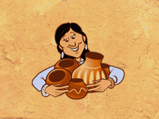

For fuel she uses sheep or cow manure mixed with pieces of wood and bark. The potter needs to know about how long to let the fire burn.
Firing is risky. Some pots will crack or bubble during firing. Every potter keeps a few cracked pots in her home, believing that pots, like people, are valuable, even when imperfect. Dextra Quotskuyva says: "You worry about your pots; it's just like your children that you are bringing into the world."
Most of the pots are beautiful and LUSTROUS. The potter makes them to follow and respect old traditions. But she also sells many of them to tourists and art collectors in order to make a living in modern society.